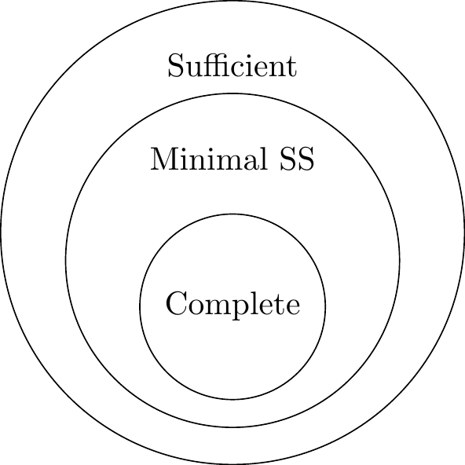

6 Minimum Variance Estimators
6.1 Completeness
Definition 6.1 (Complete Statistic) A statistic \(T\) is said to be complete if for any real-valued function \(g\), \[ E[g(T)|\theta] = 0 \quad \text{for all } \theta \] implies \[ P(g(T) = 0 | \theta) = 1 \quad \text{for all } \theta \]
Significance: If \(T\) is complete, then there exists at most one unbiased estimator for \(\theta\) that is a function of \(T\).
Example 6.1 (Uniform Distribution (Not Complete)) Let \(X_1, \dots, X_n \sim \text{Unif}(\theta-1, \theta+1)\). The density is:
\[ f(x) = \prod I(\theta-1 < x_i < \theta+1) = I(\theta \in (x_{(n)}-1, x_{(1)}+1)) \]
The statistic \(T(X) = (X_{(1)}, X_{(n)})\) is a Minimal Sufficient Statistic. However, it is not complete.
Consider the range \(R = X_{(n)} - X_{(1)}\). The distribution of \(R\) does not depend on \(\theta\) (it is an ancillary statistic). Let \(g(T) = X_{(n)} - X_{(1)} - c\), where \(c = E[X_{(n)} - X_{(1)}]\). Then \(E[g(T)] = 0\) for all \(\theta\), but \(g(T)\) is not identically zero.
Lemma 6.1 (Exponential Family Completeness) If \(T = (T_1, \dots, T_k)\) is the natural statistic of an exponential family that contains an open rectangle in the parameter space, then \(T\) is complete.
6.2 UMVUE
Definition 6.2 (Uniformly Minimum Variance Unbiased Estimator (UMVUE)) A statistic \(T(x)\) is a UMVUE for \(\theta\) if:
- \(E(T(x)|\theta) = \theta\) for all \(\theta\) (Unbiased).
- \(Var(T(x)|\theta) \le Var(d(x)|\theta)\) for all \(\theta\) and for all other unbiased estimators \(d(x)\).
The relationship between statistics types is visualized below:
Theorem 6.1 (Lehmann-Scheffe Theorem) If \(T\) is a complete and sufficient statistic, and there is an unbiased estimator \(d(X)\) such that \(E[d(X)] = \theta\), then \(\phi(T) = E[d(X)|T]\) is the unique UMVUE for \(\theta\).
Theorem 6.2 (Rao-Blackwell Theorem) Given that \(T\) is a sufficient statistic and \(d_1(x)\) is an unbiased estimator (\(E[d_1(x)] = \theta\)). Define \(g(T) = E[d_1(x) | T]\). Then:
- \(g(T)\) is a statistic (free of \(\theta\) because \(T\) is sufficient).
- \(E[g(T)] = \theta\) (Unbiased).
- \(Var(g(T)) \le Var(d_1(x))\).
Proof. Proof of Rao-Blackwell:
Since \(T\) is sufficient, the conditional distribution \(X|T\) is independent of \(\theta\), so \(g(T)\) is a valid statistic.
By the Law of Iterated Expectations: \[ E[g(T)] = E_T[ E_X(d_1(X)|T) ] = E_X[d_1(X)] = \theta \]
By the variance decomposition formula: \[ Var(d_1(X)) = Var(E[d_1(X)|T]) + E[Var(d_1(X)|T)] \] \[ Var(d_1(X)) = Var(g(T)) + E[(d_1(X) - g(T))^2 | T] \] Since \((d_1(X) - g(T))^2 \ge 0\), we have \(Var(g(T)) \le Var(d_1(X))\).
6.3 Methods for Finding UMVUE
To find the UMVUE for a parameter \(\theta\):
Find a Complete Sufficient Statistic: Identify \(T\) which is complete and sufficient for \(\theta\) (often using the Exponential Family properties).
Find an Unbiased Estimator: Find any simple statistic \(d(X)\) such that \(E[d(X)] = \theta\).
Rao-Blackwellize: Compute \(g(T) = E[d(X)|T]\). The result \(g(T)\) is the UMVUE.
Example 6.2 (Poisson UMVUE) Let \(X_1, \dots, X_n \sim \text{Poisson}(\lambda)\). Find the UMVUE for \(\lambda\) and \(\lambda^2\).
- For \(\lambda\): \(T = \sum X_i\) is a complete sufficient statistic (Poisson is exponential family). Let \(d_1(X) = X_1\). \(E[X_1] = \lambda\). We compute \(g(T) = E[X_1 | T]\). Since the conditional distribution of \(X_1\) given \(T=t\) is Binomial(\(t, 1/n\)):
\[ E[X_1 | T] = t \cdot \frac{1}{n} = \frac{T}{n} = \bar{X} \]
Thus, \(\bar{X}\) is the UMVUE for \(\lambda\).
- For \(\lambda^2\): We know \(Var(X_1) = \lambda = E(X_1^2) - (E(X_1))^2\). So \(E(X_1^2) - \lambda = \lambda^2\), which implies \(E(X_1^2 - X_1) = \lambda^2\). Let \(d_2(X) = X_1^2 - X_1\). This is an unbiased estimator for \(\lambda^2\).
We calculate \(g(T) = E[X_1^2 - X_1 | T]\).
\[ g(T) = E[X_1^2 | T] - E[X_1 | T] \]
Using the second moment of the Binomial distribution \(Bin(T, 1/n)\): \(E[X_1^2|T] = Var(X_1|T) + (E[X_1|T])^2 = T \frac{1}{n}(1-\frac{1}{n}) + (\frac{T}{n})^2\).
\[ g(T) = \left[ \frac{T}{n} - \frac{T}{n^2} + \frac{T^2}{n^2} \right] - \frac{T}{n} = \frac{T^2 - T}{n^2} = \frac{T(T-1)}{n^2} \]
Thus, \(\frac{T(T-1)}{n^2}\) is the UMVUE for \(\lambda^2\).